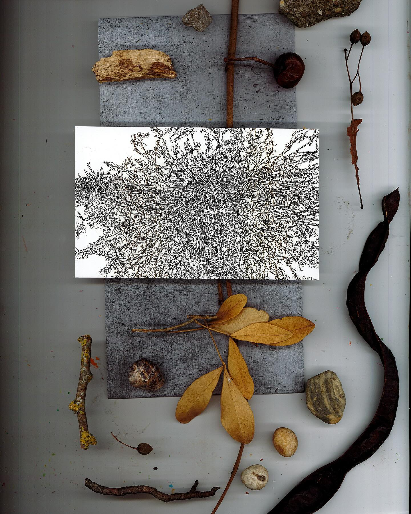

About Shubhangi Saxena
On most walks, she is the one who has stopped.
It started close to home. Asked to choose a place to study, she looked around her own streets and found she kept returning to the wild patches. Moss in the seam of a pavement. A green edge along a boundary wall. Small lives in nobody's land, doing well without anyone's help.
So she began to keep them company. She photographs what stops her, carries it back, and draws it with the finest pen she owns, one line and then the next, for weeks and sometimes months. She does not hurry it. A drawing takes about as long as it takes to really know something.
She thinks of the drawings as listening. Moss is among the oldest plants there are. It has lived through rain and drought and return more times than anyone can count, and it has things to say to whoever gets low enough to hear. Each drawing is one of those conversations, written down.
Shilp Kalaa is the name she gives the practice. Alongside the drawings come books and boxes, installations you have to kneel for, and workshops where paper is made by hand.
Selected projects and exhibitions
- 2025
- Whispers on Bricks, at KaalChakra, Asylum Chapel, London
- 2025
- Watch Your Step, an ask of the city mosses. Book and box
- 2024
- Floor installations of drawings with found materials
- 2024
- Papermaking workshops